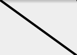
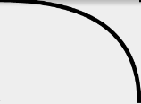
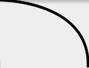
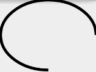

在Android的實作中，有時需要自行設計物件，並在適當的時機做額外的描繪。而談到繪製過程，其中一個重要的物件就是Path。
Path，顧名思義就是路徑，也可以當成是任何圖形的外。所以Path可以說是繪製的基礎，就像在繪圖軟件上做畫時大多需要操作貝茲曲線來制定選取範圍、製作圖型等。
在概念上，Path確實是可以當成貝茲曲線，其有各式繪製線條、曲線或幾何圖形的函示。搭配參數可以描繪出各式各樣的圖形。
以下將會用圖示搭配簡短的敘述介紹各個函式。
名詞解釋
在介紹函式，需要先介紹一些名詞，方便後續閱讀：
起點
Path預設路徑的起點皆為(0, 0)，所以直接呼叫lineTo()等函示，會當作是從(0, 0)開始描繪。如希望從特定的位置當作起點，則可以用moveTo()來更換起點。
控制點
如同繪製貝茲曲線時，用來決定曲度的控制點。控制點都會對應到一個點，可能是起點或是一段Path的終點，控制點離其對應的點越遠，則曲度越大。
使用方式
path.reset(); |
Path決定好路徑後，還需透過Paint來畫在Canvas上。Paint預設為FILL(填滿)，必須設為STROKE才能正確繪出代表線條的Path。Paint的詳細用法可以參閱Paint章節。
函示
reset()
將已透過Path繪製的路徑全部清空，重置Path的狀態。
moveTo()
- 參數：(int x, int y)
將描繪的起點移動到指定的位置(x, y)。
lineTo()
- 參數：(int x, int y)
描繪當前位置到(x, y)的直線。

quadTo()
- 參數：(int x1, int y1), (int x2, int y2)
繪製當前位置到(x2, y2)的曲線，(x1, y1)是(x, y)控制點的位置。

cubicTo()
- 參數：(float x1, float y1), (float x2, float y2), (float x3, float y3)
繪製當前位置到(x3, y3)的曲線，(x1, y1)是(x, y)控制點的位置，(x2, y2)是(x3, y3)控制點的位置。

arcTo()
- 參數：RectF oval, float startAngle, float sweepAngle, boolean forceMoveTo
在給定的範圍(oval)內，順時針繪製從起始角度(startAngle)，至終點角度(sweepAngle)的曲線。並可移動下一個Path的起點到曲線終點。
